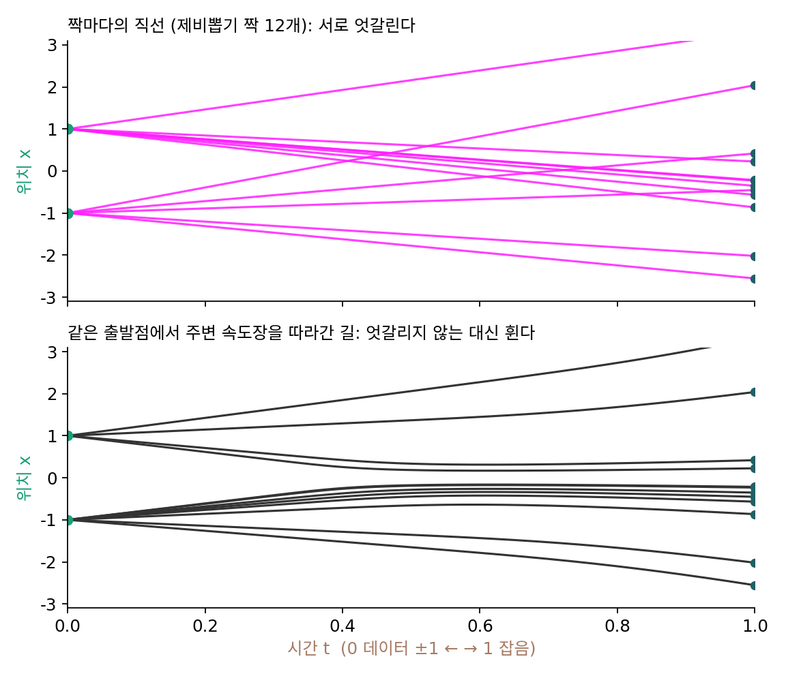

플로우 매칭: 짝마다의 직선으로 평균 속도를 배운다
짝 하나의 속도 ε − x₀는 언제든 계산할 수 있다. 그런데 한 자리를 여러 짝의 직선이 서로 다른 속도로 지나가고, 신경망은 그 자리에서 하나만 말할 수 있다. 잡음 섞인 기록으로 레이더를 만들 때도 같은 처지였다. 그 자리에 선 사람마다 떠나온 점이 달라 바늘의 정답이 여럿이었고, 제곱 오차를 줄이게 했더니 신경망은 그 평균을 배웠고 그 평균이 참 바늘이었다. 속도도 그렇게 하면 될까? 그 평균은 정말로 노이즈를 데이터로 옮기는 수첩일까?
역사: 미분방정식을 풀지 않고 흐름을 배우기
속도장을 신경망으로 두고 잡음을 데이터로 흘려 보내는 모델은 2022년 전에도 있었다. 연속 정규화 흐름(continuous normalizing flow)이라 불린 이 모델들은 그림 하나가 나올 확률을 정확히 계산해 그것을 올리는 방식으로 배웠는데, 확률을 계산하려면 학습할 때마다 미분방정식을 처음부터 끝까지 풀어야 했다. 걸음 수 문제가 생성할 때뿐 아니라 학습할 때도 따라붙은 것이다.
2022년 가을 두 팀이 거의 같은 때에 이 짐을 내려놓는 길을 냈다. 9월에 류싱차오(Xingchao Liu), 궁청웨(Chengyue Gong), 류창(Qiang Liu)이 「곧고 빠르게 흐르기: 정류 흐름으로 데이터를 만들고 옮기는 법 배우기(Flow Straight and Fast)」를 냈다. 두 분포의 표본을 곧은 길로 잇고 그 길의 빠르기를 최소제곱으로 맞히게 해서, 시간을 아주 적게 나눠도 잘 따라가지는 흐름을 배운다는 내용이었다. 10월에는 립먼(Yaron Lipman)과 동료들이 「생성 모델링을 위한 플로우 매칭(Flow Matching for Generative Modeling)」을 냈다. 요약은 이 방법을 「정해 둔 조건부 확률 경로의 벡터장을 회귀하는, 시뮬레이션 없는 학습법」이라 소개하고, 디퓨전의 잡음 섞기도 그 경로의 한 경우로 담기며, 짝을 곧게 잇는 경로가 디퓨전 경로보다 학습도 생성도 빠르다고 적었다.
조건부 속도와 주변 속도
가장 단순한 경우로 확인하자. 데이터가 두 점 −1과 +1(반반)뿐이면 신경망이 내놓아야 할 평균을 손으로 적을 수 있다. 봉우리가 하나뿐인 데이터로는 「평균 속도가 어느 짝의 속도와도 다르다」를 볼 거리가 적다.
신경망이 보는 것은 지금 자리 xt = y와 시간 t뿐이다. 그 자리를 지나는 짝들의 속도를 그 짝들이 그 자리에 있을 확률로 평균 낸 것을 주변 속도라 부르자.
둘째 등호는 xt = (1 − t)x₀ + tε를 ε에 대해 풀어 ε − x₀ = (xt − x₀)/t로 바꾼 뒤 평균을 낸 것이다. 두 점 데이터에서는 떠나온 그림의 평균이 tanh((1 − t)y/t²)라서 주변 속도를 식으로 적을 수 있다. 짝을 4백만 개 뽑아 자리 0.5 근처를 지나는 것만 모아 평균 낸 값과 견주어 보자.
import numpy as np
rng = np.random.default_rng(0)
# 데이터 ±1(반반), 잡음 ε ~ N(0, 1). 짝의 길 x_t = (1 − t) x0 + t ε, 짝의 속도 ε − x0
n = 4_000_000
x0 = rng.choice([-1.0, 1.0], n); eps = rng.normal(size=n); y = 0.5
for t in [0.8, 0.5, 0.2]:
xt = (1 - t) * x0 + t * eps
near = np.abs(xt - y) < 0.01 # 지금 자리 0.5 근처를 지나는 짝만
v = (y - np.tanh((1 - t) * y / t**2)) / t # 닫힌꼴 주변 속도
print(f"t={t}: 짝의 속도를 평균 낸 값 {(eps - x0)[near].mean():.3f} 닫힌꼴 {v:.3f}")
# t=0.8: 짝의 속도를 평균 낸 값 0.435 닫힌꼴 0.431
# t=0.5: 짝의 속도를 평균 낸 값 -0.527 닫힌꼴 -0.523
# t=0.2: 짝의 속도를 평균 낸 값 -2.499 닫힌꼴 -2.500
같은 자리 0.5에서 주변 속도가 t = 0.8에는 +0.43, t = 0.2에는 −2.5로 부호까지 바뀐다. 생성은 −v 쪽으로 가므로, 잡음이 짙을 때(t = 0.8)는 가운데 0 쪽으로 끌려가고, 잡음이 옅을 때(t = 0.2)는 +1 쪽으로 빠르게 간다. 짙은 잡음 속에서는 그 자리를 지나는 짝이 −1에서 왔는지 +1에서 왔는지 거의 반반이라 평균이 두 데이터의 한가운데 쪽을 가리키고, 잡음이 옅어지면 거의 +1에서 온 짝만 남는다. 짝마다의 속도는 일정한데, 주변 속도는 자리와 시간에 따라 모양을 바꾼다.

아래 그림의 길들은 서로 엇갈리지 않는다. 한 자리에서 속도가 하나뿐이니, 두 길이 한 번이라도 만나면 그 뒤로는 갈라질 수 없기 때문이다. 짝의 직선들이 엇갈리던 자리에서 주변 속도는 그 방향들을 평균 내고, 그 평균을 따라가는 길은 휜다.
짝의 속도를 타깃으로
주변 속도를 계산하려면 데이터 분포 전체를 알아야 한다. 대신 짝마다 아는 속도를 타깃으로 준다.
같은 입력에 정답이 여럿 붙으면 제곱 오차를 가장 작게 하는 답은 그 정답들의 평균이다. 그러니 이 손실을 끝까지 줄인 신경망은 자리와 시간마다 짝의 속도의 평균, 곧 주변 속도 v를 내놓는다. 잡음 섞인 기록으로 레이더를 만들던 잡음 제거 스코어 매칭과 똑같은 꼴이다. 그리고 립먼과 동료들은 이 주변 속도가 연속 방정식을 만족하며 잡음 분포를 데이터 분포로 옮긴다는 것을 보였다. 짝마다의 직선을 평균 낸 수첩이, 그대로 잡음 전체를 데이터 전체로 실어 나르는 수첩이다.
짝 하나(데이터 점과 잡음 점)를 조건으로 붙여 정한 속도를 타깃으로 주변 속도장을 배우는 이 방법을 플로우 매칭 (짝마다의 속도를 타깃으로 속도장을 배우기 / flow matching)이라 한다. 짝을 조건으로 붙인다는 뜻을 살려 조건부 플로우 매칭이라고도 부른다. 이름이 비슷한 정규화 흐름(normalizing flow, 되돌릴 수 있는 변환을 쌓아 확률을 정확히 계산하는 생성 모델. 이 책은 다루지 않는다)과 달리, 확률을 계산하며 배우지 않고 속도를 회귀로 배운다.
ML에서: 학습 한 바퀴
학습 루프는 디퓨전과 거의 같다. 데이터에서 그림 묶음을 뽑고, 같은 크기의 잡음과 0과 1 사이의 시간을 뽑아 xt를 만들고, 신경망이 ε − x₀를 맞히도록 제곱 오차를 줄인다. 달라진 것은 잡음 섞기의 일정(직선)과 타깃(잡음 대신 짝의 속도) 두 가지뿐이다. 그림을 만들 때는 잡음에서 출발해 t를 1에서 0으로 줄이며 −vθ 쪽으로 걷는다.
문제 3. 교차로에 화살표 하나
한 교차로를 지나는 차 가운데 70%는 동쪽(+1)으로, 30%는 서쪽(−1)으로 간다. 교차로 바닥에 화살표 하나만 그릴 수 있고, 화살표의 값 a(동쪽이 +, 서쪽이 −)는 차들의 실제 방향과의 제곱 오차 평균이 가장 작게 고른다. a는 얼마인가? 차가 많이 가는 쪽을 가리키는 a = +1과 견주어라.

당연히 +1이요. 열에 일곱이 동쪽으로 가니까 동쪽을 가리켜야죠.

a = +1일 때 제곱 오차의 평균을 계산해 봐요.
동쪽 차는 0, 서쪽 차는 (−1 − 1)² = 4라서 0.3 × 4 = 1.2요.
a = 0이면요?

0.7 × 1 + 0.3 × 1 = 1.0이에요. 아무 쪽도 안 가리키는 화살표가 더 낫다고요?

0.7(1 − a)² + 0.3(1 + a)²를 a로 미분해서 0으로 두면 a = 0.7 − 0.3 = 0.4야. 오차는 0.84로 셋 중 가장 작아. 제곱 오차를 가장 작게 하는 값 하나는 평균이야.
화살표 0.4를 그대로 따라가는 차는 한 대도 없는데, 값 하나로 말해야 하면 그게 최선이네요. 조교가 반 전체 과제 점수를 숫자 하나로 보고하라고 하면 평균을 내는 거랑 같아요.
문제 4. 두 점으로 가는 속도장
데이터가 두 점 ±1(반반), 잡음이 ε ~ N(0, 1)이다. 직선 길 xt = (1 − t)x₀ + tε에서 (가) xt = y를 본 뒤 x₀ = +1일 확률과 주변 속도 v(y, t)의 닫힌꼴을 구하라. (나) v(0.2, 0.4)를 계산하고, 생성할 때 이 자리의 점이 어느 쪽으로 움직이는지 말하라. (풀어 본 뒤 위젯 1에서 「두 점 ±1」을 골라, t = 0.4 근처의 길이 어느 쪽으로 가는지 보자.)
이건 쉬워요. 직선 길의 속도는 ε − x₀로 일정하다고 했으니까, 그걸 그대로 쓰면…
y = 0.2, t = 0.4에 있는 점의 ε − x₀가 얼마예요?
x₀ = +1이면 ε = (0.2 − 0.6)/0.4 = −1이라 속도가 −2이고, x₀ = −1이면 ε = (0.2 + 0.6)/0.4 = 2라 속도가 3이에요. …같은 자리에 속도가 둘이네요. 일정하다는 건 짝 하나의 속도였구나. 교차로 화살표처럼 −2와 3의 가중평균이에요.
섞는 비율은 내가 구할게. x₀ = +1이면 xt = 0.6 + 0.4ε라서 y가 나올 확률밀도는 exp(−(y − (1 − t))²/2)에 비례해. 두 경우의 비를 쓰면 떠나온 점의 평균이 tanh((1 − t)y) = tanh(0.12) = 0.119이고, 속도는 (0.2 − 0.119)/0.4 = 0.20이야. 양수니까 생성할 때는 0 쪽, 왼쪽으로 가.
이상한데. 0.2는 +1 쪽에 있고 잡음도 꽤 걷힌 t = 0.4인데 오히려 가운데로 돌아간다고? 위젯에서는 t = 0.4쯤이면 길들이 벌써 봉우리 쪽으로 갈라지던데.

서연 학생, xt = 0.6 + 0.4ε의 분산이 얼마예요?

아, 0.4²이에요. 잡음에 t가 곱해져 있는데 분산을 1로 썼어요. 확률밀도는 exp(−(y − (1 − t))²/(2t²))이고, 떠나온 점의 평균은 tanh((1 − t)y/t²) = tanh(0.75) = 0.635예요.
그러면 v(y, t) = (y − tanh((1 − t)y/t²))/t이고, (나)는 (0.2 − 0.635)/0.4 = −1.09예요. +1에서 왔을 확률이 0.818이라 −2와 3을 0.818 : 0.182로 섞으면 −1.09가 나와요. 생성할 때는 −v = +1.09, 오른쪽 +1 쪽으로 가요.
짝을 4백만 개 뽑아 0.2 근처만 모아 봤어요. −1.088이에요. 닫힌꼴이랑 맞아요.
확률론 수업에서 확률변수에 수를 곱하면 분산은 그 수의 제곱만큼 바뀐다고 배웠는데, 밀도를 쓸 때 그걸 빠뜨렸어요. 분산이 틀리니까 방향까지 뒤집혔네요.
문제 5. 한 걸음에 그린 그림
데이터가 x₀ ~ N(4, 0.5²), 잡음이 ε ~ N(0, 1)이고, 둘을 제비뽑기로(서로 상관없이) 짝지어 학습했다. 학습이 완벽해 신경망이 주변 속도 v(y, t) = (y − E[x₀ ∣ xt = y])/t를 정확히 안다고 하자. 이 데이터에서 E[x₀ ∣ xt = y] = 4 + (0.25(1 − t)/Vt)(y − 4(1 − t)), Vt = 0.25(1 − t)² + t²이다. 생성은 잡음 점에서 출발해 오일러 방법(지금 자리의 속도로 한 걸음만큼 곧장 가기를 되풀이)으로 t를 1에서 0으로 줄여 간다. (가) 한 걸음(1 → 0)에 가면 샘플들은 어떤 분포가 되는가? (나) 두 걸음(1 → 0.5 → 0)이면 샘플의 표준편차는 얼마인가? 데이터의 표준편차 0.5와 견주어라. (풀어 본 뒤 위젯 1의 「문제 5 불러오기」로 확인해 보자.)
한 걸음이면 도착점은 y − v(y, 1)이에요. t = 1이면 V가 1이고 괄호 앞 계수가 0이라 E[x₀ ∣ y] = 4, 속도는 y − 4예요. 도착점은 y − (y − 4) = 4. …모든 샘플이 정확히 4예요.

학습이 완벽한데 그림이 전부 똑같이 나와요? 코드로 돌려도 표준편차가 0이에요.
t = 1의 속도는 무엇을 보고 정한 속도였죠?
출발할 때는 잡음만 보고는 어느 그림과 짝인지 전혀 모르니까, 짝들의 속도를 평균하면 모두 데이터 평균 쪽을 가리켜. 교차로 화살표가 0.4를 가리켰던 것처럼 「평균으로는 맞는」 방향일 뿐이야. 그 방향으로 끝까지 곧장 가면 모두 평균에 닿지.
(나)는요?
첫 걸음에 y = ε − 0.5(ε − 4) = 2 + 0.5ε예요. t = 0.5에서 V = 0.3125라 E[x₀ ∣ y] = 4 + 0.4(y − 2), 속도는 1.2y − 6.4예요. 한 걸음 더 가면 0.4y + 3.2 = 4 + 0.2ε, 표준편차 0.2예요. 걸음을 10번으로 나누면 0.43, 100번이면 0.49로 0.5에 다가가요.

속도장이 정확한데도 큰 걸음이 빗나가는 건 흐름선이 곧지 않아서야. 짝마다 길은 직선인데, 그 길들을 평균한 흐름은 처음엔 평균 쪽으로 모였다가 나중에 다시 퍼지도록 휘어 있어. 출발점의 속도로 끝까지 가면 그 휨을 못 따라가.

레이더 바늘로 원래 점의 평균을 짐작해 한 번에 뛰었을 때도 봉우리 사이 빈 땅에 떨어졌잖아요. 같은 일이네요. 그림이면 고양이 여러 마리를 겹쳐 평균 낸 흐릿한 그림이 나오겠고요. 마감 직전에 친구들 답을 평균 내서 내면 누구의 답도 아닌 어정쩡한 답이 되는 거랑 같아요.